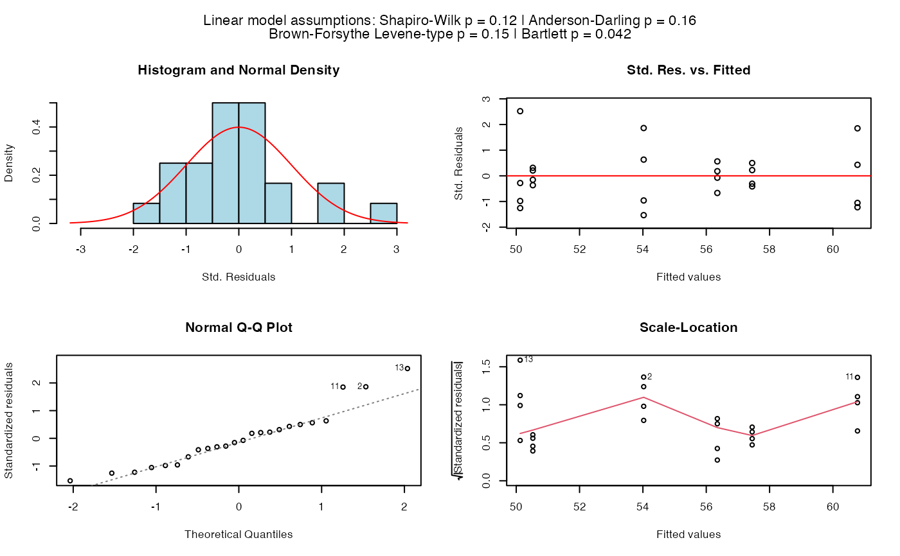
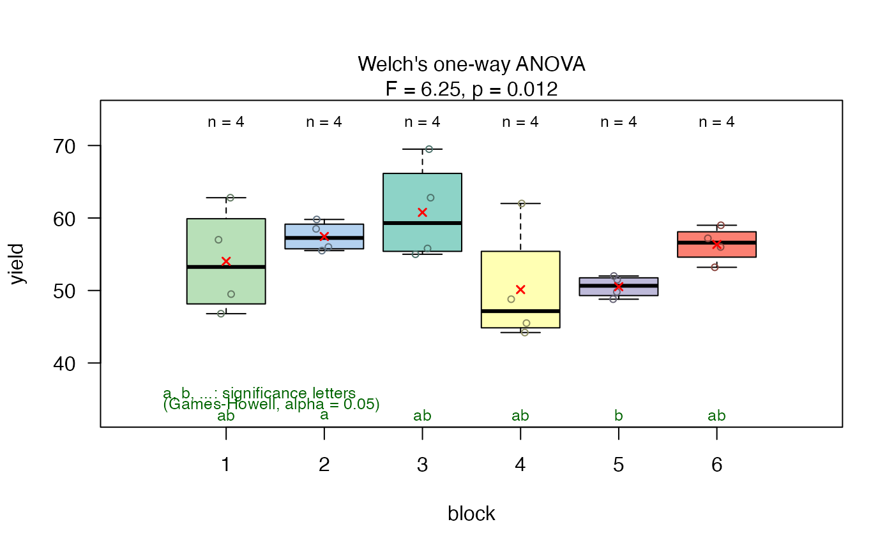

Displays the full statistical test results and, if available, assumption tests and post hoc comparisons.
Usage
# S3 method for class 'visstat'
summary(object, ...)Arguments
- object
An object of class
"visstat", returned byvisstat().- ...
Currently unused. Included for S3 method compatibility.
Details
This method provides a full textual report of the statistical
test results returned by visstat(), and prints the contents of
posthoc_summary if present.
Examples
anova <- visstat(npk$block, npk$yield)


summary(anova)
#> Summary of visstat object
#>
#> --- Named components ---
#> [1] "summary statistics of ANOVA" "post-hoc analysis "
#> [3] "conf.level" "effect_size"
#>
#> --- Contents ---
#>
#> $summary statistics of ANOVA:
#> Df Sum Sq Mean Sq F value Pr(>F)
#> fact 5 343.3 68.66 2.318 0.0861 .
#> Residuals 18 533.1 29.62
#> ---
#> Signif. codes: 0 ‘***’ 0.001 ‘**’ 0.01 ‘*’ 0.05 ‘.’ 0.1 ‘ ’ 1
#>
#> $post-hoc analysis :
#> Tukey multiple comparisons of means
#> 95% family-wise confidence level
#>
#> Fit: aov(formula = samples ~ fact)
#>
#> $fact
#> diff lwr upr p adj
#> 2-1 3.425 -8.804242 15.654242 0.9440575
#> 3-1 6.750 -5.479242 18.979242 0.5166401
#> 4-1 -3.900 -16.129242 8.329242 0.9074049
#> 5-1 -3.500 -15.729242 8.729242 0.9390165
#> 6-1 2.325 -9.904242 14.554242 0.9893559
#> 3-2 3.325 -8.904242 15.554242 0.9503518
#> 4-2 -7.325 -19.554242 4.904242 0.4312574
#> 5-2 -6.925 -19.154242 5.304242 0.4900643
#> 6-2 -1.100 -13.329242 11.129242 0.9996936
#> 4-3 -10.650 -22.879242 1.579242 0.1094850
#> 5-3 -10.250 -22.479242 1.979242 0.1321421
#> 6-3 -4.425 -16.654242 7.804242 0.8539828
#> 5-4 0.400 -11.829242 12.629242 0.9999980
#> 6-4 6.225 -6.004242 18.454242 0.5981409
#> 6-5 5.825 -6.404242 18.054242 0.6604328
#>
#>
#> $conf.level:
#> [1] 0.95
#>
#> $effect_size:
#> $name
#> [1] "omega-squared"
#>
#> $estimate
#> [1] 0.2154794
#>
#> $effect_size_method
#> [1] "Omega-squared for one-way ANOVA"
#>